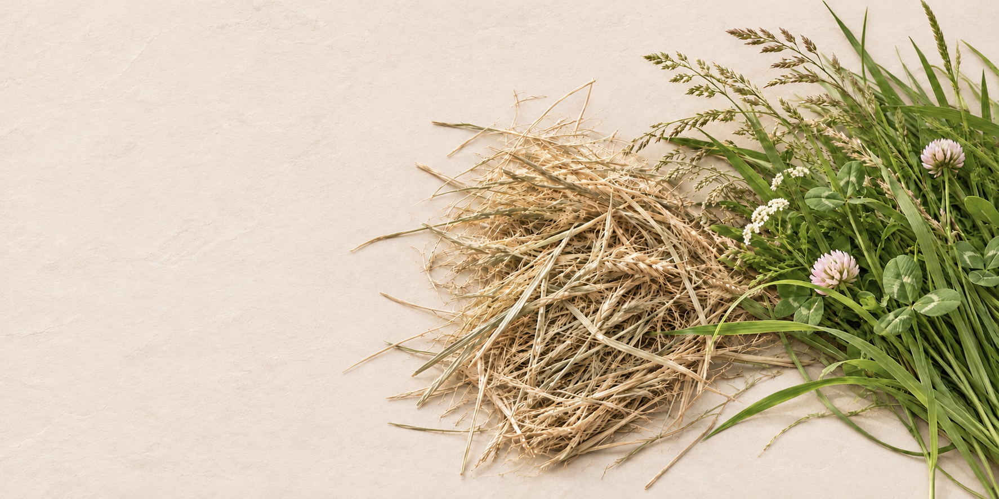
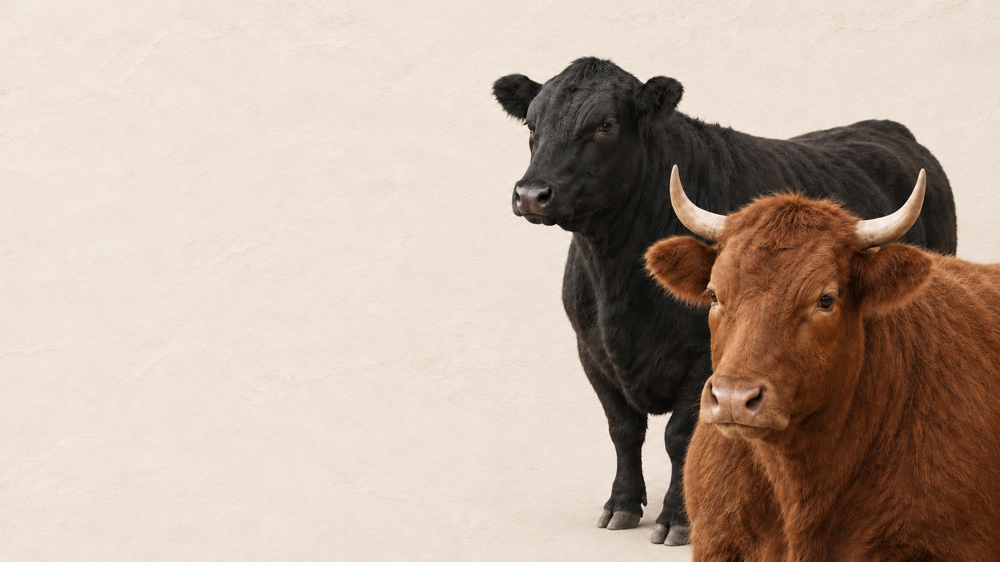
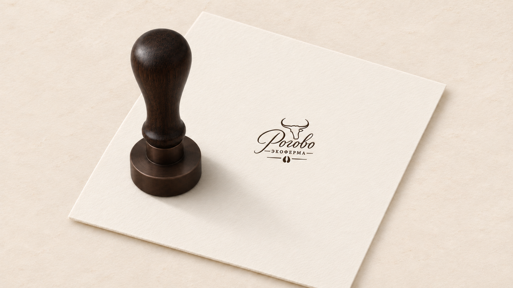
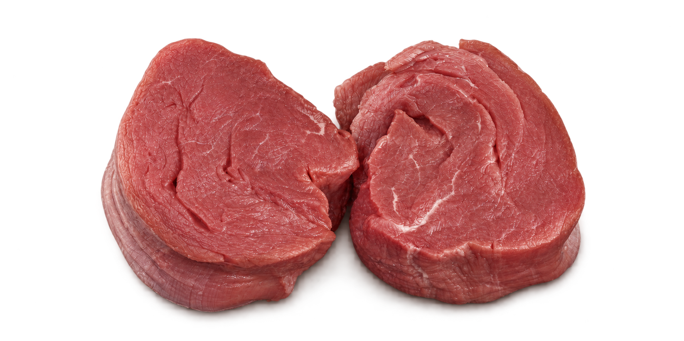
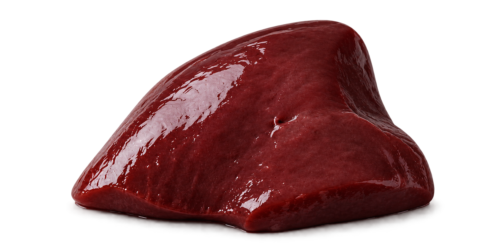
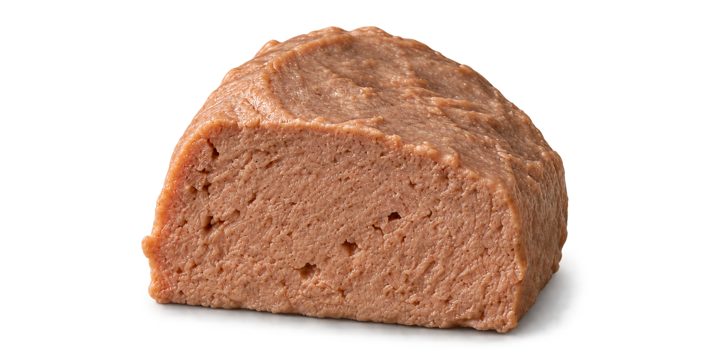
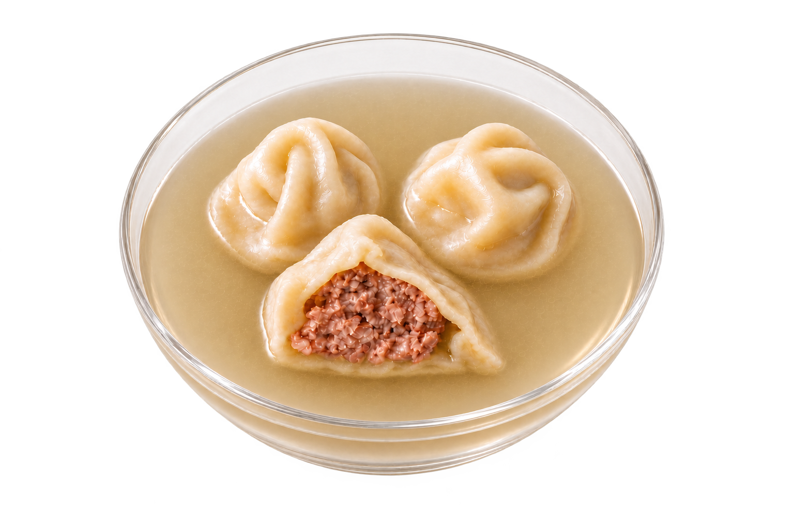

Хорошее мясо начинается с травы

Всё начинается с того, что даёт сама природа. Чистые луговые травы становятся основой естественного питания животных.
Чистые луга. Верховья Волги.

КонтактыТам, где чувствуешь запах травы, вкус чистой холодной воды и нотки дикой природы в каждом кусочке.

Всё начинается с того, что даёт сама природа. Чистые луговые травы становятся основой естественного питания животных.
Чистые луга. Верховья Волги.

Во флорентийском стейке на первом плане вкус самого мяса. У нашей говядины свой характер, который ей дают две породы — калмыцкая и абердин-ангусская.
Настоящий вкус начинается с породы.

Каждый этап находится под нашим контролем — от выращивания животных до готового продукта. Никакой химии, ГМО и гормонов. Только ответственность за то, что мы создаём.
Качество можно гарантировать, только когда всё делаешь сам.
Деревня среди лесов и лугов Тверской области. Здесь находится наша ферма, где стадо растёт на свободном выпасе.
И где производят только говядину и качественные продукты из нее.

270 дней травяного откорма, свободный выпас и рост без ускорителей. Так природа формирует характер мяса — его выразительный вкус и благородную текстуру.
Натуральное волшебство вкуса дикого мяса одомашненной породы.


У каждого продукта свой характер: у печени — выразительный, глубокий вкус, у паштета — нежная текстура и тонкое послевкусие. Их объединяет чистота происхождения.
Вкусы, которые вы, скорее всего, никогда ещё не пробовали.

Нежные пельмени в прозрачном говяжьем бульоне. Достаточно соли и перца, чтобы раскрыть всю глубину вкуса говядины.
Чистый вкус и есть усилитель.
Мы вас ждём на дегустацию и экскурсию.
Тверская область, д. Рогово, ул. Центральная, 38 Открыть на карте